Tondafoto

Mirar más allá de la vida
Tondafoto es mi marca como fotógrafo. Mi forma de trabajar busca el momento auténtico en lugar de inducir poses, y la identidad tenía que contar eso antes de mostrar una sola foto. Las formas coloridas traducen una personalidad vibrante y el gusto por las estéticas antiguas.
- Desafío
- Una marca de fotografía que escapara de lo tradicional: nada de cámaras, diafragmas ni firmas manuscritas, sino una identidad que transmitiera cercanía y humor, y que invitara a la gente a dejarse fotografiar.
- Solución
- Un logotipo que une franjas de color y el nombre «tonda» en un mismo bloque, una paleta de rosa, amarillo, verde y violeta sobre crudo y negro, y una tipografía condensada con sombra de cartel antiguo. Las frases en inglés hablan como el fotógrafo: «Look beyond life», «Look and smile», «Smile, you can be photographed», «Eternal memories».
- Mi rol
- Cliente: definí el brief y la dirección de la marca, y la uso en mi trabajo como fotógrafo. El diseño de la identidad es de Uel Molon.
- Resultado
- Una marca con voz propia que presenta al fotógrafo antes que a la foto, reconocible en redes, impresos y merch.
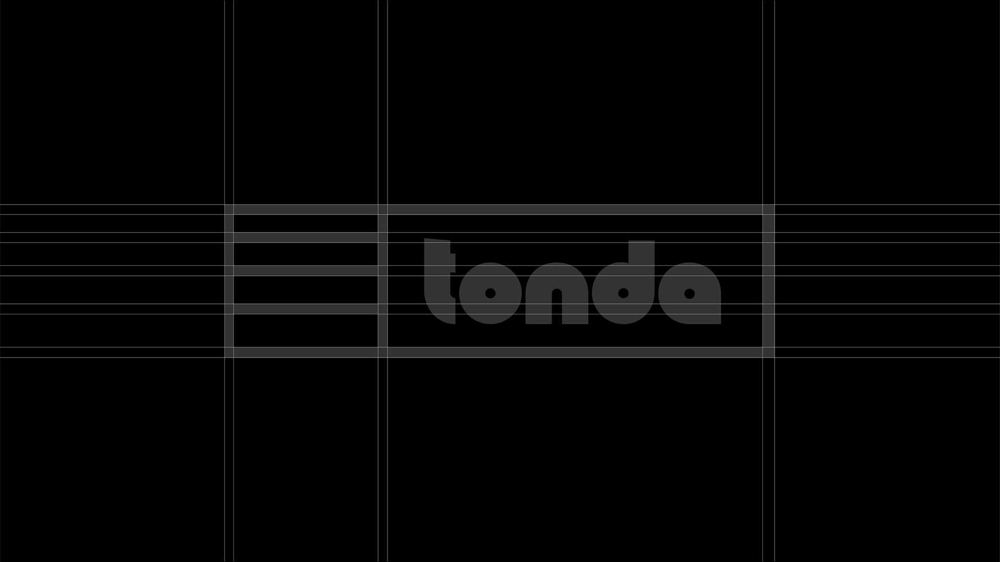
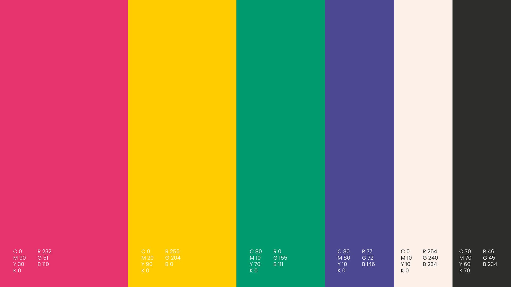

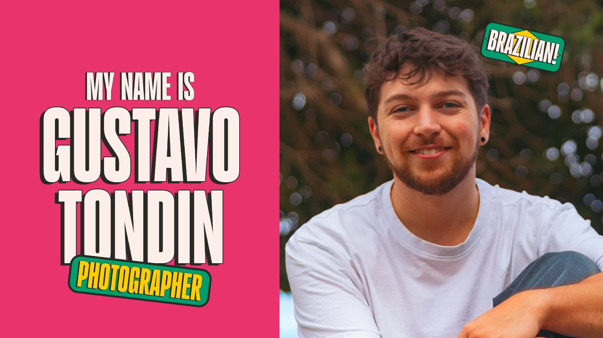
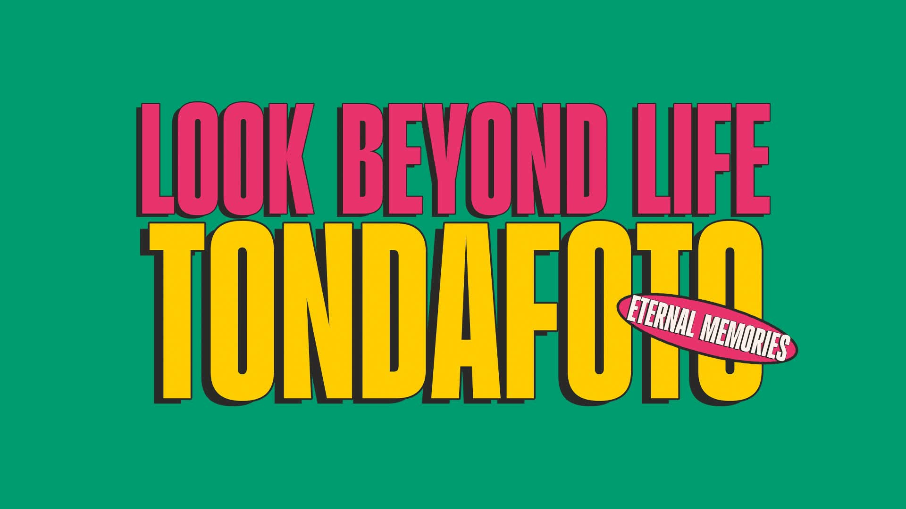
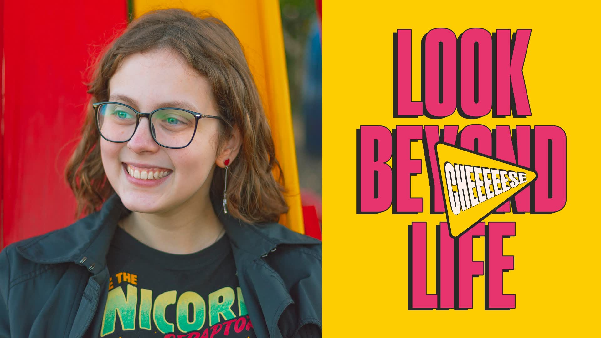

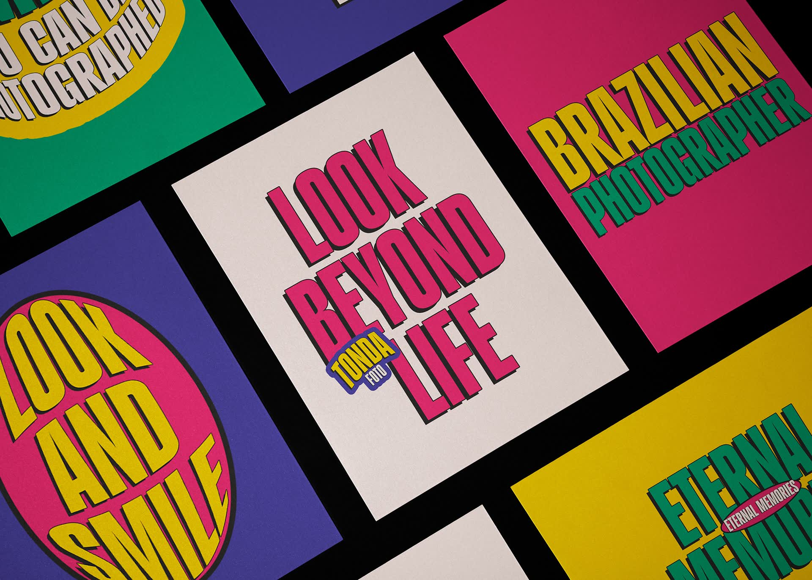
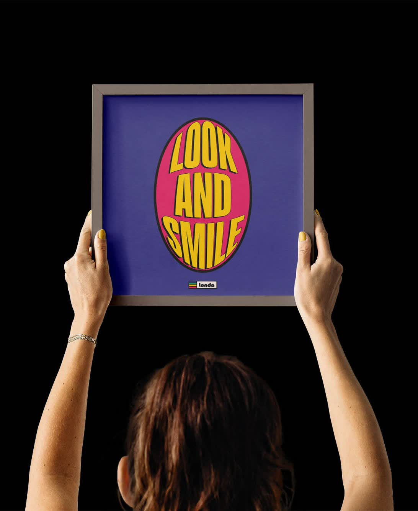
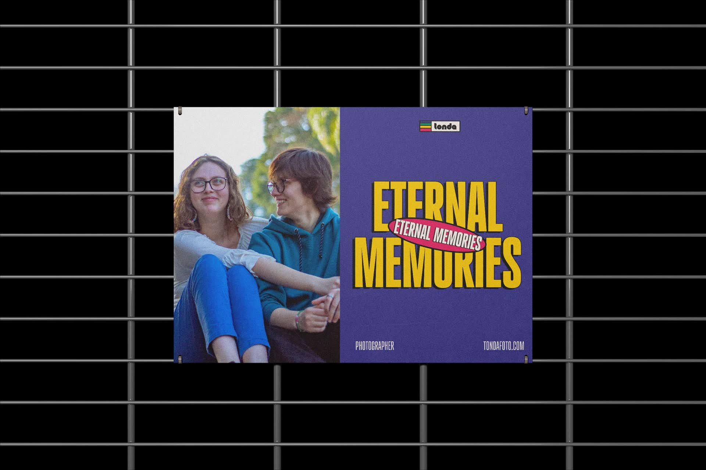
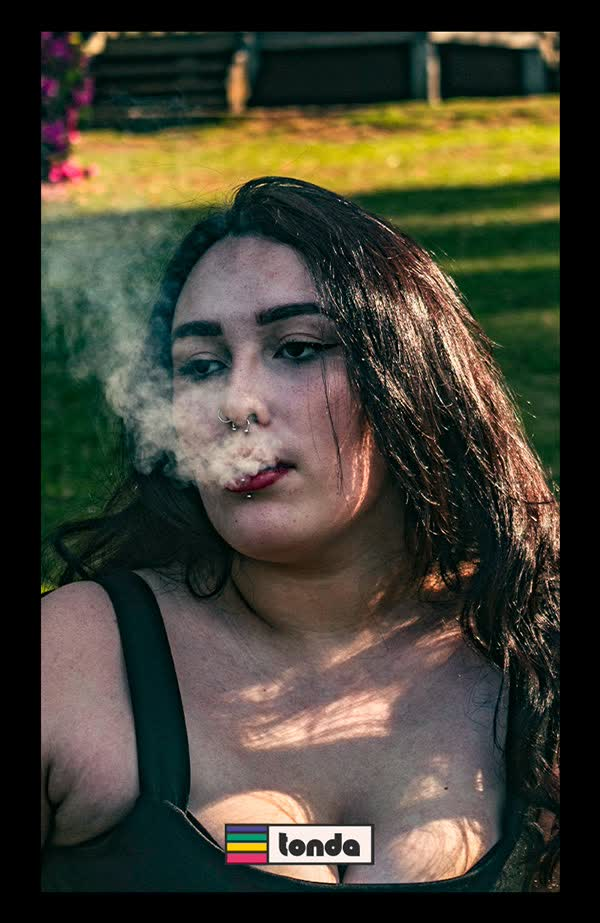
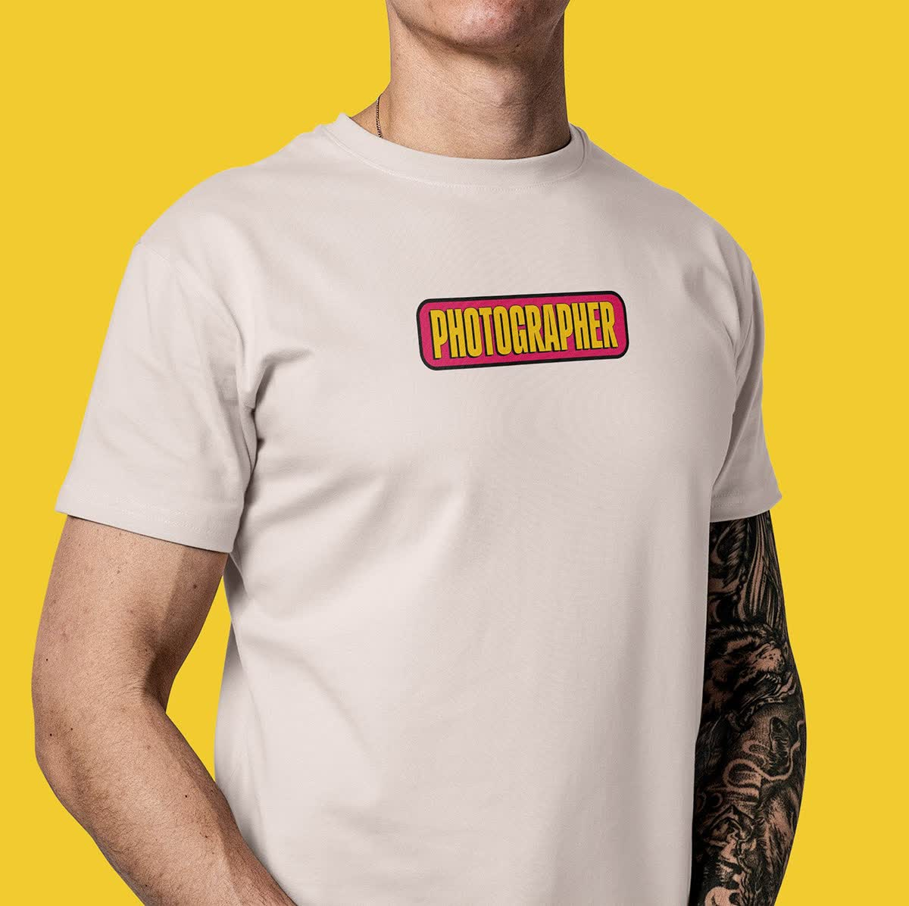
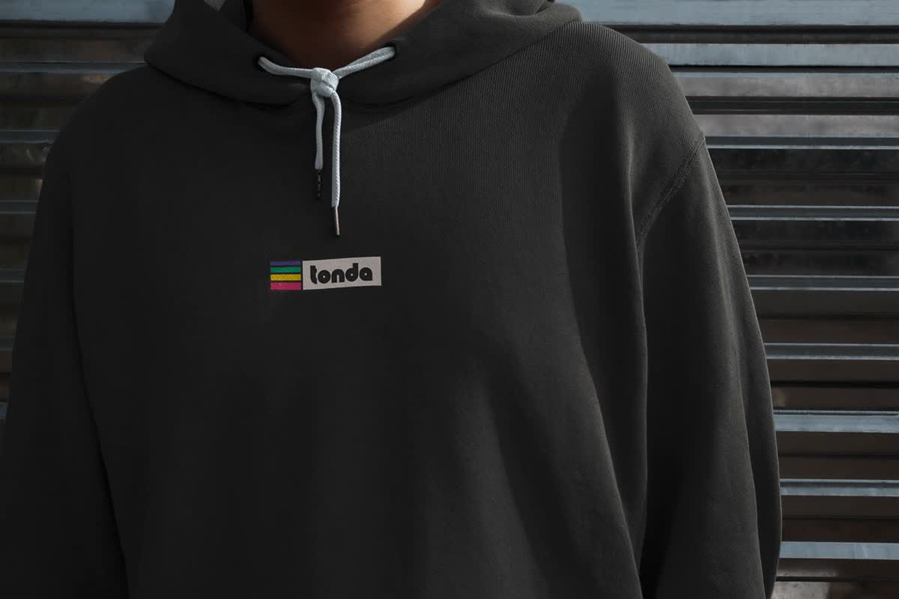
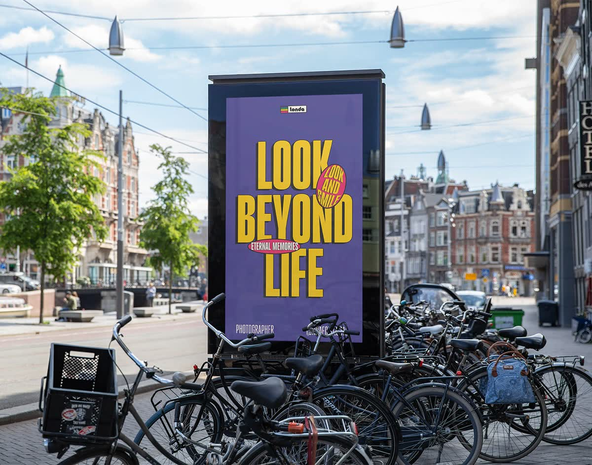
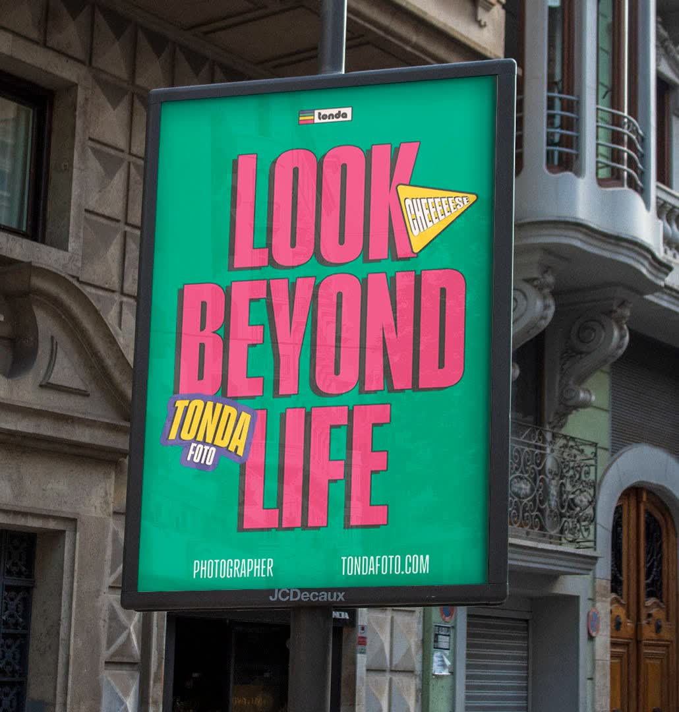
Créditos
Cliente
Tondafoto · marca personal
Año
2022
Servicios
Identidad visual · Tono de voz · Piezas gráficas · Merchandising
Mi rol
Cliente · Brief y dirección de marca
Diseño
Uel Molon